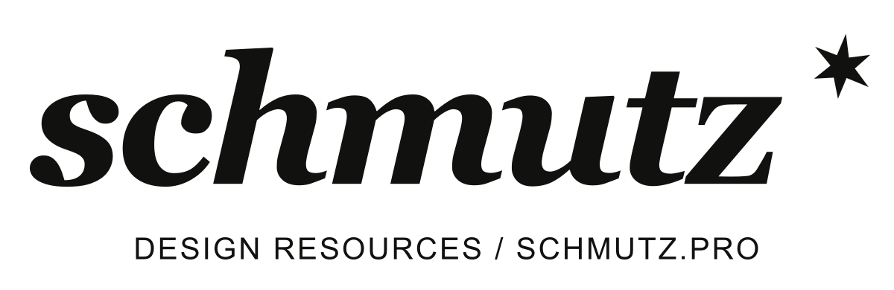
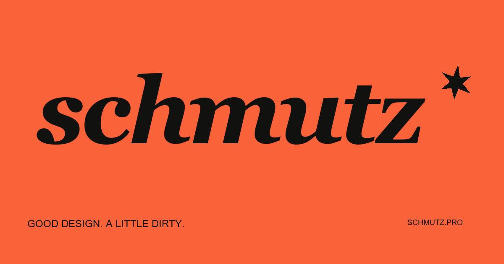
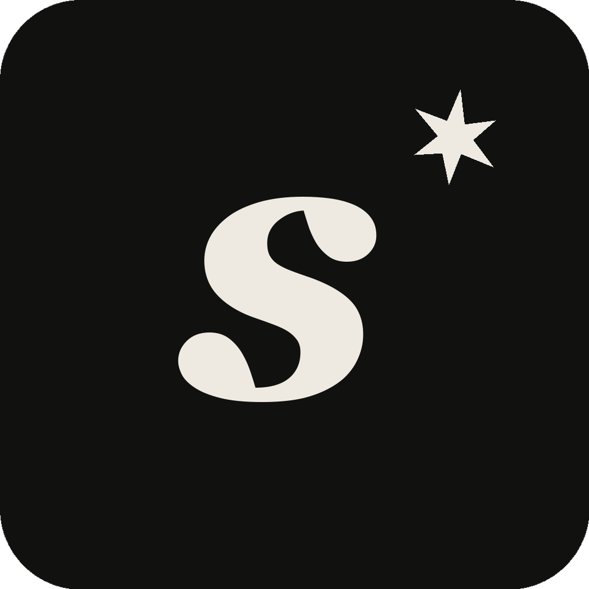
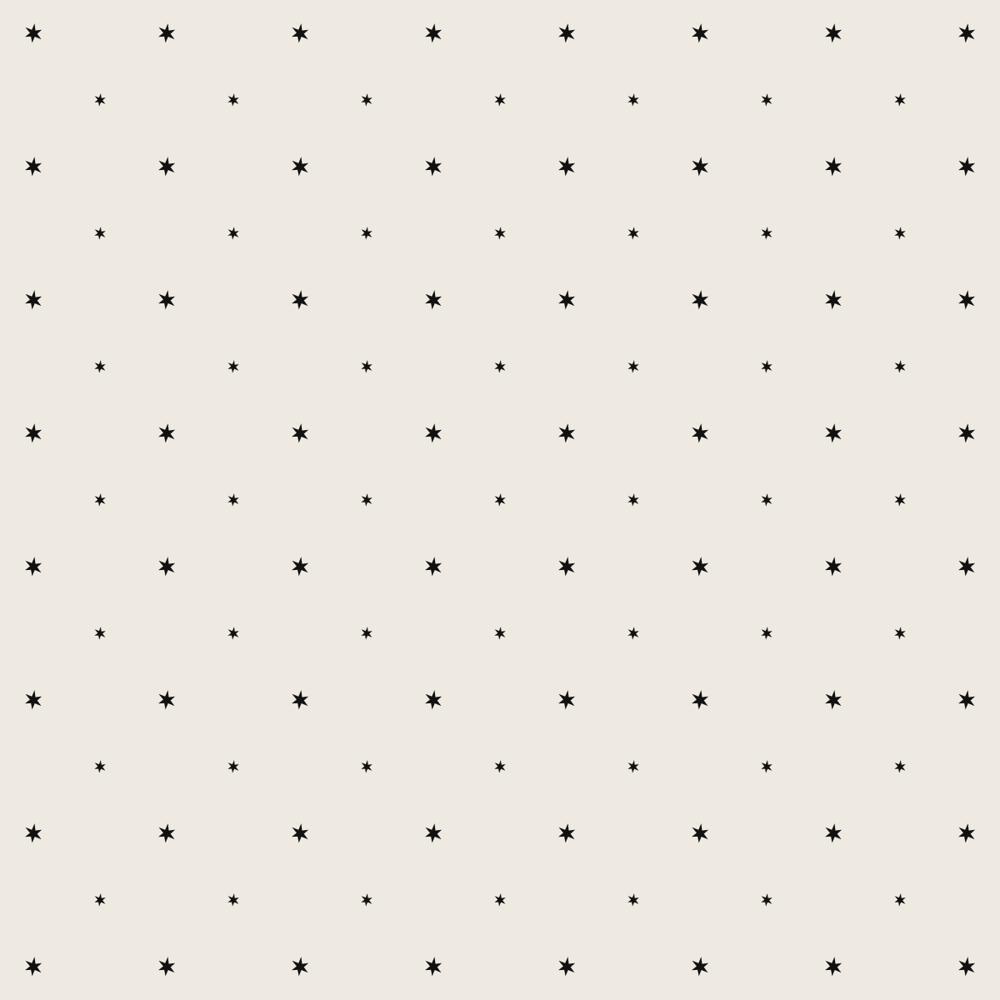

Good design.
A little dirty.
A little character.
An italic serif wordmark with tight spacing and a six-point speck. Confident, expressive, and built to hold its own against a colorful collection of work.

Give it room.
Keep at least half the height of the lowercase s clear on every side. Minimum wordmark width: 140 px on screen. Use the monogram for smaller placements, and the favicon master at 16–32 px.
Keep its shape.
Use the outlined master. Never retype, stretch, add shadows, change the spacing, or place it over a busy image. All PNG logo exports are transparent.
Choose the right contrast.
Paper on Ink. Ink on Paper or Rust. For accent backgrounds, use Ink. Keep the speck as a single accent instead of filling every empty corner.


Mostly ink.
Occasionally loud.
Ink and Paper carry the identity. Rust is the signature accent. Acid, Lilac, and Ice give the product collection room to play. Use one dominant accent per layout.
#11111017 / 17 / 16#EEEAE2238 / 234 / 226#FA633A250 / 99 / 58#CFDE40207 / 222 / 64#D4B8D1212 / 184 / 209#BED4EF190 / 212 / 239Digital colors are sRGB. Use your print provider's output profile for print production. Adobe ASE, GPL swatches, CSS variables, and JSON tokens are included.
Editorial above.
Practical below.
A point
of view.
Display headlines and expressive emphasis. Use italics for a phrase, not every line. Large headlines: 72–112 px. Section titles: 40–64 px. Line height: 1.0–1.1.
Good bones.
Endless possibilities.
Templates should give your idea somewhere to start. Use clear, direct language. Make the design memorable and the instructions easy to follow.
Body: 14–18 px with 1.5–1.7 line height. Navigation and labels: 12–14 px. Keep body text at a readable contrast.
What is in the font package?
The original Schmutz Symbols font is included as TTF and WOFF, with CSS and a character map. Georgia and Arial are system fonts; their proprietary files are not redistributed. The wordmark is supplied as outlines, so no font installation is needed to use the logo.
The current identity uses Georgia and Arial from your system. The setup guide also links to optional open-source alternatives for future use. These text font files are not included in this kit.
One consistent hand.
24 original utility icons on a 24 px grid. Square caps, miter joins, 1.6 px strokes. Use at 20–32 px for controls. Add a text label or an accessible name to every meaningful icon.
ORIGINAL SYMBOL FONT / U+E001–U+E008

The same dirt.
Different surfaces.



Make
a little
mess.
Product covers.
Use one strong type idea, one main accent, and plenty of negative space. Keep the format label in the same corner across a collection. Product imagery can change; the Schmutz signature stays fixed.
Personal + commercial.
Use the same visual treatment for both license options. Label them clearly. Purchase links can go to Etsy, Gumroad, or both. Never let a badge substitute for the full license terms.
Motion.
Use short, direct transitions. An arrow can turn; the speck can rotate once. Keep the wordmark intact and honor reduced-motion preferences. Avoid continuous movement behind body text.
Ready to make.

Editable SVG outlines import into vector design tools. PNGs work wherever image uploads are supported. Text fonts and brand-kit capabilities depend on the platform and plan.